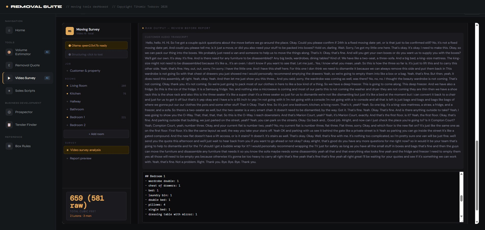
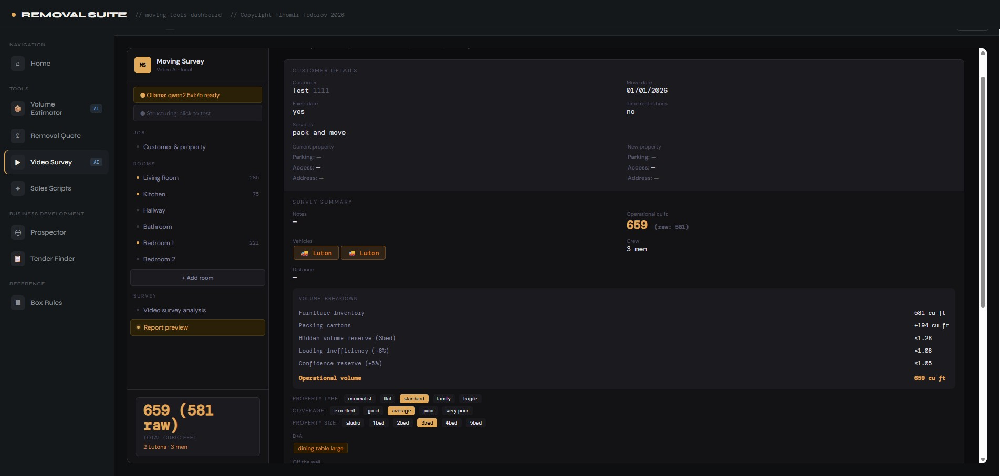

Operations, in development
A computer vision and AI tool that writes a room-by-room surveyor report from video of a job, so surveys don't all need someone on a live call. Still being tested, so this is work in progress, not a finished case study.
How it flows
In-person and video-call surveys don't scale well. Each one needs a surveyor's attention in real time, and the report still has to be written up afterwards. As volume grows, that manual step becomes the bottleneck.
I wanted to find out whether video of a job on its own, a walkthrough recording instead of a live call, could be turned straight into a structured, room-by-room surveyor report. That would mean a surveyor doesn't have to be there in real time for every job.
A computer vision and AI pipeline processes video from removals jobs and produces room-by-room reports, including cubic footage and packing material estimates. I'm still calibrating it to make both more accurate.
It's in active development. The main challenge is calibration: getting the cubic footage and packing material estimates accurate enough to use for pricing, not just roughly right.
The business impact is still being checked. I'd rather show this honestly as work in progress than put a number on it before the accuracy work is done.
Estimating from video is a harder calibration problem than pulling data from documents. A video frame doesn't have the clear structure of a typed inventory list, so the model has to work out far more for itself.
Engineering Decisions
In the Field


Next